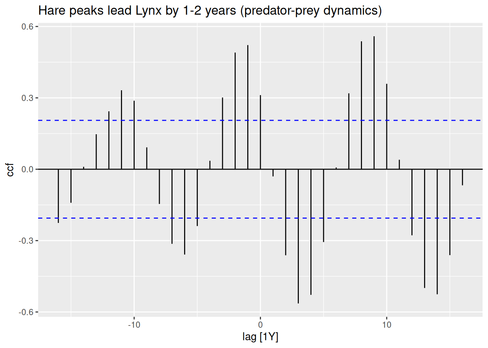
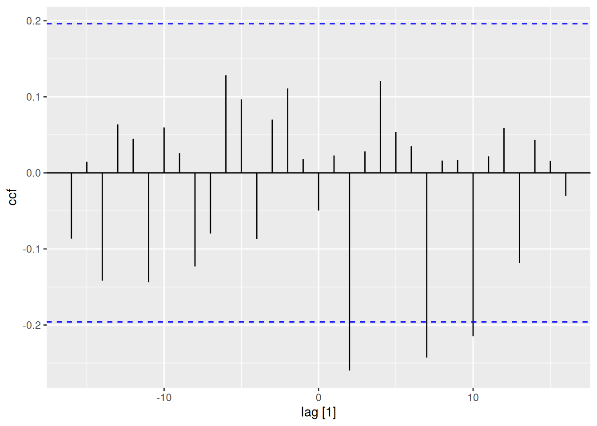

# Time Series Essentials, install if needed!
library(feasts) # Feature extraction & decomposition
library(fable) # Forecasting models (ARIMA, ETS, etc.)
library(fpp3) # Tidy time series dataseta
library(astsa) # Applied statistical TS methods from textbook
library(tseries) # Unit root tests & TS diagnostics
library(tsibbledata) # Curated TS datasets
library(quantmod) # Financial data retrieval
library(tidyquant) # Financial analysis in tidyverse
library(purrr) # Functional programming for TS pipelines
library(readr) # Efficient data importActivity20
Cross-Correlation & Multiserial Dynamics
Objective: Analyze lead-lag relationships between series
The cross-correlation function at lag k is given by:
\[ \rho_{XY}(k) = \frac{\gamma_{XY}(k)}{\sqrt{\gamma_{XX}(0)\,\gamma_{YY}(0)}} \]
where:
- \(\gamma_{XY}(k)\) is the cross-covariance at lag k between series X and Y
- \(\gamma_{XX}(0)\) and \(\gamma_{YY}(0)\) are the variances (covariance at lag 0) of X and Y, respectively
- \(\rho_{XY}(k)\) thus ranges between -1 and +1
How to interpret the CCF?
The CCF at lag k measures how strongly the current values of one series correlate with the values of the other series shifted by k time steps.
- Positive lag (k > 0) indicates how much the first series LEADS the second.
- Negative lag (k < 0) indicates how much the second series LEADS the first.
- A high absolute value of CCF at a particular lag suggests a strong lead-lag relationship at that time shift.
1.1 CCF Analysis with pelt
pelt |>
as_tsibble() |>
CCF(Lynx, Hare) |>
autoplot() +
labs(title = "Hare peaks lead Lynx by 1-2 years (predator-prey dynamics)")
A single cross-correlation plot is sufficient for understanding how two time series move relative to each other over different time shifts.
Peaks at positive lags suggest that the first series’ changes come before changes in the second series (leading). Peaks at negative lags suggest the second series leads the first.
In ecological contexts (like hare vs. lynx), the classic Hudson Bay hare–lynx data show that the hare population tends to peak first, with the lynx population lagging by roughly 1–2 years.
1.2 Spurious Correlation Caveat
# Simulate independent series
set.seed(123)
fake_data <- tsibble(t=1:100, x=rnorm(100), y=rnorm(100), index=t)
fake_data |>
CCF(x,y) |> autoplot()
Critical Thinking: Even independent series may show “significant” correlations by chance. Always validate with domain knowledge.
Simulation & Model Identification
Hands-on ARMA process experimentation
1.3 AR(2) Simulation & Diagnostics
sim_ar2 <- arima.sim(n=200, list(ar=c(0.6, -0.3)))
sim_ar2 |>
as_tsibble() |>
ACF() |>
autoplot() # Decaying oscillations
sim_ar2 |>
as_tsibble() |>
PACF() |>
autoplot() # Spikes at lags 1-2
1.4 MA(1) Characteristics
sim_ma1 <- arima.sim(n=200, list(ma=0.8))
sim_ma1 |>
as_tsibble() |>
ACF() |>
autoplot() # Cutoff after lag 1sim_ma1 |>
as_tsibble() |>
PACF() |>
autoplot() # Exponential decayGolden Rule:
- AR(p): PACF significant for first p lags
- MA(q): ACF significant for first q lags
- ARMA: Both decay gradually
Lab Activity 1: Electricity demand and Temperature
The vic_elec dataset contains half-hourly electricity demand in Victoria, Australia, alongside temperature readings.
1. Aggregate the data to daily resolution (summing demand and averaging temperature).
2. Plot the cross-correlation function (CCF) between daily demand and temperature.
3. Interpret the results.vic_elec_daily <- vic_elec %>%
index_by(Date = as.Date(Time)) %>%
summarise(
DailyDemand = sum(Demand),
DailyTemp = mean(Temperature)
) %>%
as_tsibble(index = Date)
knitr::kable(vic_elec_daily %>% head())| Date | DailyDemand | DailyTemp |
|---|---|---|
| 2011-12-31 | 82531.75 | 21.04773 |
| 2012-01-01 | 227778.26 | 26.57812 |
| 2012-01-02 | 275490.99 | 31.75104 |
| 2012-01-03 | 258955.33 | 24.56771 |
| 2012-01-04 | 213792.38 | 18.19167 |
| 2012-01-05 | 211066.43 | 17.81250 |
# Cross-correlation function between Demand and Temperature up to ±30 days
vic_elec_daily %>%
CCF(DailyDemand, DailyTemp) %>%
autoplot()
The CCF values are consistently near or below zero across all lags; there isn’t a pronounced peak or trough at any specific lag. Since the correlations remain broadly negative (and small in magnitude) for both positive and negative lags, there’s no clear evidence that temperature systematically leads or lags demand in this dataset. The correlation is negative, suggesting that higher daily temperatures coincide with slightly lower daily electricity demand (or vice versa). One possible explanation is that the observed period or region may use more electricity for heating rather than cooling, so warmer days reduce demand.